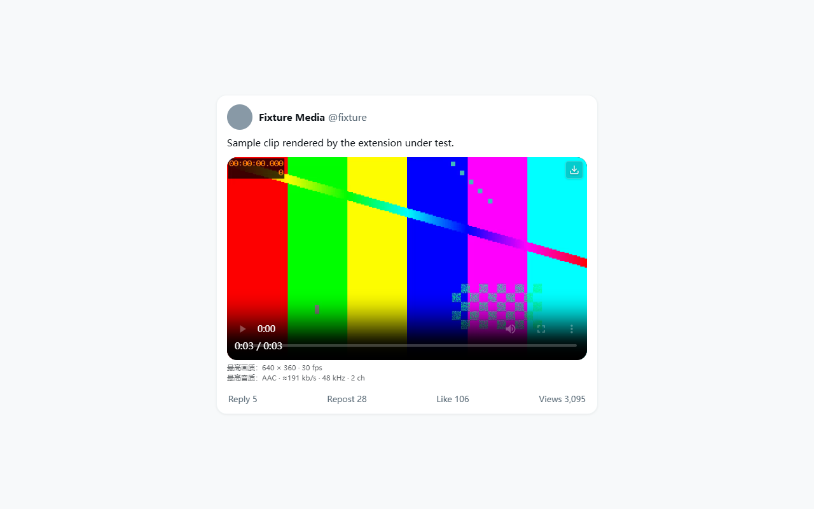
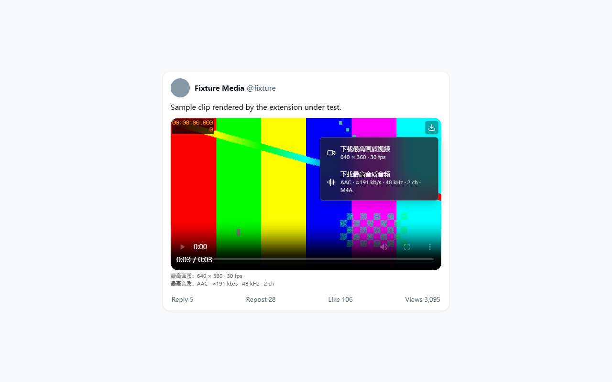

视频上的画质选择菜单
视频画面内部角落是 28px
按钮配 16px 图标。点击展开视频/音频菜单。菜单支持键盘选择、按
Escape 关闭，点击外部也会关闭。
视频画面内部角落是 28px
按钮配 16px 图标。点击展开视频/音频菜单。菜单支持键盘选择、按
Escape 关闭，点击外部也会关闭。
在播放器之外的正常文档流位置显示分辨率与帧率，以及音频编码、估计码率、采样率和声道数。看到这些数值不需要先下载。
点击工具栏图标可查看任务列表、实际取得的画质、限制或降级原因，并取消或重试任务，还可以直接跳到 Chrome 自身的下载页面。
下载通过 Chrome 下载管理器完成，保存位置遵从你的 Chrome
设置，完全由你决定。文件名示例
x_author_1001551623938805763_1_480x360.mp4。


以上图片都由发布构建在本机测试样例上渲染：彩色条纹片段与
@fixture 账号来自自动化测试，不是真实帖子。可用
node scripts/store-assets.mjs 重新生成。
「最高」指 X 提供且你当前能取得的版本，不是上传原片。视频候选按实际像素、帧率、同编码码率排序，同档优先直链
MP4。播放器当前清晰度、预览图尺寸和 original_info
都不直接代表可下载版本。
所有可用音轨独立比较，按码率、采样率、声道数排序；从 HLS 或 MP4 无损提取为 M4A，绝不转成有损 MP3，也不会静默丢弃配对音轨。HLS 只做无损封装，不重编码。
前缀 ≈ 表示该码率是通过编码包抽样估计得到的，单位为
kb/s、kHz、ch。这是测量结果，不是对听感的主观评分。
Range
块只读取必要的头部和样本表，不预取整段视频负载。
一次最多两个活动下载任务，其中最多一个媒体合并或音频提取，最多排队 20 个任务。同一视频的视频下载和音频下载分别去重。媒体临时数据放在 OPFS 中以控制内存，Chrome 保存完成后删除临时文件。失败候选可自动降级并保留提示；取消、磁盘问题、限流、非法地址会停止任务，而不是无限重试。
浏览器会话内复用十五分钟的显示摘要与两分钟的下载候选，后台 service worker 休眠和离屏文档关闭不会清空。签名 URL 改变会使缓存失效。缓存不跨浏览器会话，也不存储任何鉴权信息。
下面就是产品边界，逐条来自扩展自己的声明。没有写在「支持」里的能力，请当作不支持。
网站随时可能改变 DOM、接口和数据结构。扩展针对当前的站点维护；X 改版后需要更新版本。
三条安装路径，均已标注当前状态。共同要求：Chrome 或 Edge 116 及以上。扩展本身没有登录入口，因此不需要登录，也不需要复制 Cookie。
审核通过后即为一键安装，并可自动更新。
在 Chrome Web Store 获取 X Video Downloader
商店 listing URL 只在 Google
审核通过后才会分配，所以上面的 …/pending
是占位链接，上架前无法打开。在此之前请使用路径 3。
同一个扩展包会提交到 Microsoft Edge Add-ons，供 Edge 用户使用。
在 Microsoft Edge Add-ons 中查找 X Video Downloader
Edge 的 listing URL 同样要等 Add-ons
商店审核通过后才分配，当前链接指向商店首页。上架前请先用路径
3，并在 edge://extensions 打开「开发人员模式」。
x-video-downloader-1.3.0.zip
并解压；同处提供 SHA256SUMS.txt 校验文件。
chrome://extensions，开启右上角「开发者模式」。
manifest.json 的那个目录。
扩展安装目录需要保留。更新时把新包解压覆盖到原先加载的同一个目录，在
chrome://extensions
点击卡片上的刷新图标，确认版本为 1.3.0
后刷新 X 页面。无需重新登录；沿用同一目录可以保留扩展 ID
和本地任务记录。
| 权限 | 用途 |
|---|---|
downloads |
启动、取消和跟踪扩展自己创建的下载。 |
storage |
本地任务状态，最多保留 60 条已结束记录。 |
offscreen |
Worker 媒体处理，以及在下载完成前维持 Blob URL。 |
https://x.com/* |
页面按钮，以及从同一页面采集媒体数据。 |
https://video.twimg.com/* |
读取媒体清单和音视频数据。 |
https://cdn.syndication.twimg.com/* |
可视视频的公开嵌入元数据后备来源。 |
不申请 cookies 权限，不申请调试器权限，不申请全站权限
，也没有登录绕过。媒体请求不携带 X
会话鉴权头。所有运行时代码随扩展打包：没有远程脚本、没有
eval、没有远程模块加载、没有原生通信，我们也没有任何服务器可连。页面消息只传递媒体记录，不能单独触发下载。
仓库： AuroraAeon/x-video-downloader。原创代码使用 MIT 许可证，第三方库保留各自的许可证。
随扩展打包的第三方库：acorn 8.15.0（MIT，只读语法树解析）、lucide
0.468.0（ISC，图标）、mediabunny 1.56.2（MPL-2.0，媒体解析与无损封装，未修改源码）。完整许可证文本随构建保存在
dist/THIRD_PARTY_NOTICES.txt。
发行版包含版本化的 ZIP 和
SHA256SUMS.txt。多轮完整构建得到同一个压缩包哈希；条目排序并使用固定时间戳；打包先写入临时目录再原子替换
dist。
发布校验会拒绝构建目录中的多余文件、放宽的主机权限和被删除的内容安全策略，因此你加载的目录与经过检查的清单一致。
只有读取该帖子、以及获取你主动要求的那份媒体所必需的请求，目标只有上面三个域名。没有任何数据发给我们 —— 也没有地方可发：无统计、无遥测、无崩溃上报、无后端。
存储细节、60 条上限以及如何清除本地记录，请见隐私政策。